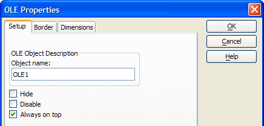
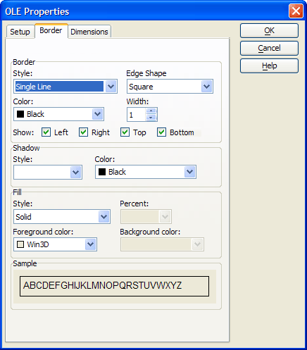
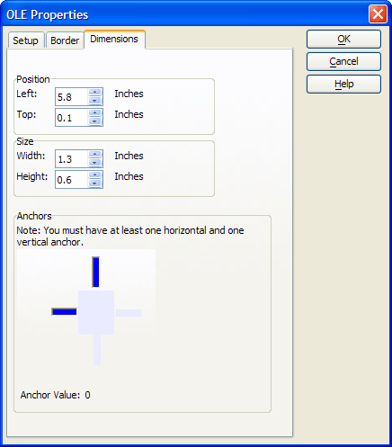

OLE Properties
|
Item |
Description |
|
Object Name |
Any text description that you wish. :formname.controlname.object.name as C |
|
Hide |
When checked the button becomes invisible. :formname.controlname.object.visible as L |
|
Disable |
When checked the field becomes inaccessible. :formname.controlname.object.enabled as L |
|
Always on Top |
When checked the button is always on the top-most level of the form layout. No other form elements will over lap it. :formname.controlname.object.always_on_top as L |

|
Item |
Description |
| Border Style | Sets the border line style. :formname.controlname.border.style as C |
| Border Color | Sets the border line color (using a color name or RGB value ). :formname.controlname.border.color as C |
| Border Edge Shape | Sets the shape of the border. :formname.controlname.border.style as C |
| Border Width | The width of the border line in pixels. :formname.controlname.border.width as N |
| Show Left, Right, Top, Bottom | For edge shape "Square" determines which sides of the rectangle will display. For other edge shapes, determines which corners will be square or styled. :formname.controlname.border.has_bottom_edge as L :formname.controlname.border.has_left_edge as L :formname.controlname.border.has_right_edge as L :formname.controlname.border.has_top_edge as L |
| Shadow Style | Determines how much the shadow will be offset and its degree of shading. :formname.controlname.shadow.style as C |
| Shadow Color | Sets the shadow color (using a color name or RGB value ). :formname.controlname.shadow.color as C |
| Fill Style | Determines whether the fill will have a solid color, an opaque halftone color, a translucent halftone color, or be transparent. :formname.controlname.fill.style as C |
| Fill Foreground Color | Sets the foreground color (using a color name or RGB value ) of the halftone when fill style is translucent. :formname.controlname.fill.forecolor as C |
| Fill Background Color | Sets the background color (using a color name or RGB value ) of the halftone when fill style is translucent. :formname.controlname.fill.backcolor as C |

|
Item |
Description |
| Left | Sets the horizontal position of the control. :formname.controlname.object.left as N |
| Top | Sets the vertical position of the control. :formname.controlname.object.top as N |
| Width | Sets the width of the control. :formname.controlname.object.width as N |
| Height | Sets the height of the control. :formname.controlname.object.height as N |
|
Anchor |
Determines the way the tabbed control will or will not stretch as the base form is resized. Possible attachment points are: 1 = top and right 2 = top, left, and right 4 = bottom and left 5 = bottom and right 6 = bottom, left, and right 8 = top, bottom, and left 9 = top, bottom, and right 10 = top, bottom, left, and right :formname.controlname.object.anchor as N |

See Also